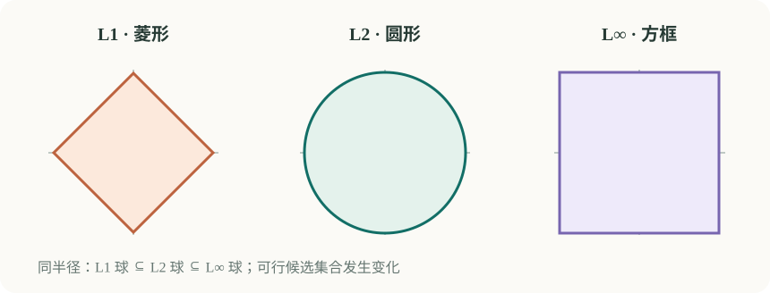

4.5.2 其他范数的信赖域：圆、菱形、方框为什么影响可行步
相同半径下，L1 范数限定菱形、L2 限定圆形、L∞ 限定方框。它们允许的候选步不同；若目标带非负变量界，L∞ 的盒状区域还可与变量边界直接形成逐坐标上下界。
三种范数的定义与集合包含关系
对二维 p=(p₁,p₂)，‖p‖₁=|p₁|+|p₂|，‖p‖₂=√(p₁²+p₂²)，‖p‖∞=max(|p₁|,|p₂|)。由于 ‖p‖∞≤‖p‖₂≤‖p‖₁，固定同一个 Δ 时，L1 球包含于 L2 球，后者又包含于 L∞ 球。
因此换范数不仅改变图形，还改变优化时可测试的步长集合。
为什么盒状信赖域容易和简单变量界结合
若要求 x≥0，当前点 xₖ 上的合法更新满足 xₖ+p≥0，即 pᵢ≥−xₖᵢ。再施加 ‖p‖∞≤Δ 就得到每坐标 −Δ≤pᵢ≤Δ。
合并两个条件可写成 max(−xₖᵢ,−Δ)≤pᵢ≤Δ，是直接的盒约束。L2 圆与非负正交象限相交则是圆弧边界，不再只是各坐标独立区间。

一个同时满足非负性但不满足欧氏半径的角落步
令 xₖ=(0.2,0.3)、Δ=0.3，并选 p=(−0.2,−0.3)。新点 xₖ+p=(0,0)，满足非负约束。p 的 L∞ 范数为 0.3，在盒内；L2 范数是 √0.13≈0.36056，超过半径；L1 范数是 0.5，也超过半径。
这说明同一半径下，一个角落候选可以被 L∞ 接受，却被 L1 和 L2 拒绝。
带对角二次模型的盒约束最优值
考虑 q(p)=gᵀp+½pᵀBp，g=(1,2)、B=diag(2,4)。无约束最优步为 (−0.5,−0.5)，但 xₖ=(0.2,0.3) 与 Δ=0.3 给出盒约束 p₁∈[−0.2,0.3]、p₂∈[−0.3,0.3]。
由于该 B 对角正定，分别截断无约束分量即可得到最优步 p*=(-0.2,-0.3)。其模型值为 −0.58，因此预测下降为 0.58。这是特殊的分离二次目标，不代表所有盒约束 QP 都能逐坐标截断。
使用不同范数的选择并无统一赢家
对于没有界约束的小中规模问题，L2 球便于推导正交谱与 Hessian 乘子条件；遇到简单变量界或高维结构性约束时，L∞ 方框可能更加自然。
若 B 含非零交叉项或负曲率，独立截断不再保证求解正确。任何近似子问题仍需检查充分模型下降与外层实际/预测比。
交互：改变半径并计算盒内最优步
令当前 x=(0.2,0.3)，二次模型 g=(1,2)、B=diag(2,4)；调整 Δ，观察 L∞ 盒内最优步与三种范数。
Python：几何判据与盒约束模型下降
本程序仅求解对角正定二次模型的逐坐标盒最小值，并交叉核对范数关系。
"""Compare L1/L2/Linf radii with a nonnegative-variable box QP."""
from math import hypot,sqrt
X=(0.2,0.3)
P=(-0.2,-0.3)
def norms(p):
return abs(p[0])+abs(p[1]),hypot(*p),max(abs(p[0]),abs(p[1]))
def boxed(delta):
if delta<=0: raise ValueError("radius must be positive")
low=(-min(X[0],delta),-min(X[1],delta))
unconstrained=(-0.5,-0.5)
p=tuple(max(low[i],min(delta,unconstrained[i])) for i in range(2))
model=p[0]+2*p[1]+p[0]**2+2*p[1]**2
return p,-model
if __name__=="__main__":
n1,n2,ninf=norms(P)
print("norms",n1,n2,ninf)
assert abs(n1-0.5)<1e-12
assert abs(n2-sqrt(.13))<1e-12
assert ninf==.3 and n2>.3 and n1>.3
p,drop=boxed(.3)
assert p==P and abs(drop-.58)<1e-12
for delta in (.1,.3,.6):
p,drop=boxed(delta)
assert max(abs(z) for z in p)<=delta+1e-12
assert all(X[i]+p[i]>=-1e-12 for i in (0,1))
assert drop>0